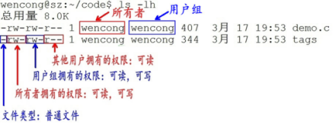
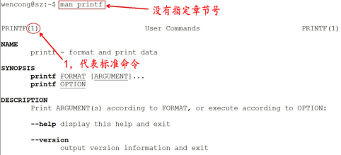
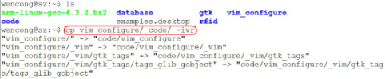
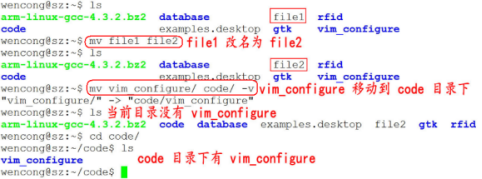
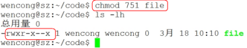
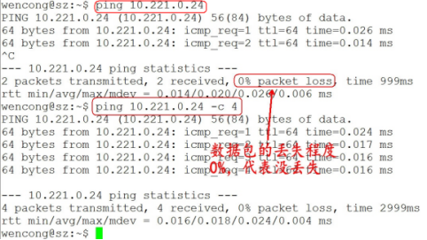

linux入门操作
1. Unix/Linux操作系统介绍
1.1 操作系统的作用
1.1.1 操作系统的目标
l 方便：使计算机系统易于使用
l 有效：以更有效的方式使用计算机系统资源
l 扩展：方便用户有效开发、测试和引进新功能
1.1.2 操作系统的地位
操作系统在计算机系统中承上启下的地位：向下封装硬件，向上提供操作接口。
1.2 Unix/Linux操作系统介绍
1.2.1 Unix家族
l 1965：贝尔实验室（Bell Labs）加入一项由通用电气和麻省理工学院合作的计划，该计划要建立一套多使用者、多任务、多层次的MULTICS操作系统。后来因为项目太为复杂失败。
l 1969：其主要开发者Thompson（后被称为UNIX之父）和Ritchie领导一组开发者，开发了一个新的多任务操作系统—UNICS，后来被改名为Unix，最初的Unix是用B语言和汇编语言混合编写而成。
l 1971：两人在贝尔实验室共同发明了C语言，并于1973用C语言重写了Unix。
l 1974：UNIX第一次出现在贝尔实验室以外。此后UNIX被政府机关，研究机构，企业和大学注意到，并逐渐流行开来。
l 1980：有两个最主要的Unix的版本线，一个是Berkeley的BSD UNIX，另一个是AT&T的Unix，两者的竞争最终引发了Unix的战争，最终导致Unix出现各种各样的变种。
l 1982：AT&T基于版本7开发了UNIX System Ⅲ的第一个商业版本，并不再开源。
l 1992~2001：由于版权问题，AT&T公司与BSD开发组开始了一场将近10年的版权官司。UNIX由于其昂贵的费用，仅局限于大型机的应用；BSD因为版权问题，失去了宝贵的发展时期。
1.2.2 Linux家族
l Minix（mini-UNIX）最初是由Andrew Tanenbaum教授，仿照4.3BSD的源代码，白手起家完成了12000行C语言的编写工作这个系统只是一个教学工具，没有什么实际应用价值。
l 1990年，Linus Torvalds决定编写一个自己的Minix内核，初名为Linus' Minix，意为Linus的Minix内核，后来改名为Linux，此内核于1991年正式发布，并逐渐引起人们的注意。
l Linux操作系统的诞生、发展、和成长过程依赖于五个重要支柱：unix操作系统、minix操作系统、GNU计划、POSIX标准和互联网。
l GNU计划：GNU是“GNU is Not Unix”的递归缩写，由Richard M.Stallman于1984年创办,旨在开发一个免费、类unix的操作系统-GNU系统及其开发工具；Emacs编辑系统、BASH shell程序、GCC、GDB等开发工具都是GNU组织的产品。
l 1992年Linux与其他GNU软件结合，完全自由的操作系统正式诞生。该操作系统往往被称为“GNU/Linux”或简称。
l POSIX标准：POSIX标准定义了操作系统应该为应用程序提供的接口标准，POSIX标准用来统一Unix、Linux各分支编程接口，以提高其通用型和可移植性。
1.2.3 Linux的两类用户
1.2.4 Linux的远亲
1.2.5 Linux和Unix的联系
l UNIX系统是工作站上最常用的操作系统，它是一个多用户、多任务的实时操作系统，允许多人同时访问计算机， 并同时运行多个任务。UNIX系统具有稳定、高效、安全、方便、功能强大等诸多优点，自20世纪70年代开始便运行在许多大型和小型计算机上。
l UNIX虽然是一个安全、稳定且功能强大的操作系统，但它也一直是一种大型的而且对运行平台要求很高的操作系统，只能在工作站或小型机上才能发挥全部功能，并且价格昂贵，对普通用户来说是可望而不可及的，这为后来Linux的崛起提供了机会，Linux是一个类UNIX操作系统。
l Linux是免费的、不受版权制约、与UNIX兼容的操作系统。
l Linux在x86架构上实现了UNIX系统的全部特性，具有多用户多任务的能力，同时保持了高效性和稳定性，Linux具有如下的优秀的特点：
1) 开放性；
2) 完全免费；
3) 多用户，多任务；
4) 设备独立性；
5) 丰富的网络功能；
6) 可靠的系统安全性；
1.2.6 Linux内核及发行版介绍
1) Linux内核版本
内核(kernel)是系统的心脏，是运行程序和管理像磁盘和打印机等硬件设备的核心程序，它提供了一个在裸设备与应用程序间的抽象层。
Linux内核版本又分为稳定版和开发版，两种版本是相互关联，相互循环：
l 稳定版：具有工业级强度，可以广泛地应用和部署。新的稳定版相对于较旧的只是修正一些bug或加入一些新的驱动程序。
l 开发版：由于要试验各种解决方案，所以变化很快。
内核源码网址：http://www.kernel.org，所有来自全世界的对Linux源码的修改最终都会汇总到这个网站，由Linus领导的开源社区对其进行甄别和修改最终决定是否进入到Linux主线内核源码中。
2) Linux发行版本
Linux发行版 (也被叫做 GNU/Linux 发行版) 通常包含了包括桌面环境、办公套件、媒体播放器、数据库等应用软件。
这些操作系统通常由Linux内核、以及来自GNU计划的大量的函式库，和基于X Window的图形界面，在X Window中用户同样可以通过使用鼠标对窗口、菜单等进行操作来完成相应的工作。
X Window系统是一个非常出色的图形窗口系统，是类UNIX系统的图形用户界面的工业标准。X Window系统最重要的特征之一就是它的结构与设备无关。
X Window系统的主要特点有如下几点：
l X Window系统是客户机/服务器结构的。X Window的实现是与操作系统内核分开的，其主要由X Server和X Client两部分组成。
l X Window系统不是Unix/Linux操作系统的必须的构成部分，而只是一个可选的应用程序组件。
POSITION | 2015 | 2014 |
1 | Linux Mint | Linux Mint |
2 | Debian | Ubuntu |
3 | Ubuntu | Debian |
4 | openSUSE | openSUSE |
5 | Fedora | Fedora |
6 | Mageia | Mageia |
7 | Manjaro | Arch |
8 | CentOS | Elementary |
9 | Arch | CentOS |
10 | Elementary | Zorin |
1.2.7 Unix/Linux开发应用领域介绍
l Unix/Linux服务器
是目前Unix/Linux应用最多的一个领域，可以提供Web、FTP、Gopher、SMTP/POP3、Proxy/Cache、DNS等服务器，支持服务器集群，支持虚拟主机、虚拟服务、VPN等。
l 嵌入式Linux系统
嵌入式Linux是将流行的Linux操作系统进行剪裁修改，能够在嵌入式计算机系统上运行的一种操作系统。Linux嵌入式系统能够支持多种CPU和硬件平台，性能稳定，剪裁性好，开发和使用容易。其中包括Embedix、uCLinux、muLinux等。
l 桌面应用
近年来，Linux系统特别强调在桌面应用方面的改进，并且已达到相当的水平，完全可以作为一种集办公应用、多媒体应用、网络应用等多方面功能于一体的图形界面操作系统，在办公应用方面，Unix/Linux集成了openOffice、SUN公司的StarOffice以及KOffice等工具。
l 电子政务
随着Linux的快速发展，Linux已逐渐成为Windows系统重要的竞争力量。尤其是Linux在安全性方面的独特优势，又使得Linux在政府应用领域得到很大的发展。目前一些国家正将其电子政务系统向Linux平台迁移。中国政府也对Linux给予极大的支持。
2. 文件系统
2.1 目录和路径
2.1.1 目录
l 目录是一组相关文件的集合。
l 一个目录下面除了可以存放文件之外还可以存放其他目录，即可包含子目录。
l 在确定文件、目录位置时，DOS和Unix/Linux都采用“路径名+文件名”的方式。路径反映的是目录与目录之间的关系。
2.1.2 路径
Unix/Linux路径由到达定位文件的目录组成。在Unix/Linux系统中组成路径的目录分割符为斜杠“/”，而DOS则用反斜杠“\”来分割各个目录。
路径分为绝对路径和相对路径：
l 绝对路径
1) 绝对路径是从目录树的树根“/”目录开始往下直至到达文件所经过的所有节点目录。
2) 下级目录接在上级目录后面用“/”隔开。
3) 注意：绝对路径都是从“/”开始的，所以第一个字符一定是“/”。
l 相对路径
1) 相对路径是指目标目录相对于当前目录的位置。
2) 如果不在当前目录下，则需要使用两个特殊目录“.”和“”了。目录“.”指向当前目录，而目录“..”。
2.2 文件系统
2.2.1 Windows和Linux文件系统区别
在 windows 平台下，打开“计算机”，我们看到的是一个个的驱动器盘符：
每个驱动器都有自己的根目录结构，这样形成了多个树并列的情形，如图所示：
在 Linux 下，我们是看不到这些驱动器盘符，我们看到的是文件夹（目录）：
RedHat
Ubuntu
在早期的 UNIX 系统中，各个厂家各自定义了自己的 UNIX 系统文件目录，比较混乱。Linux 面世不久后，对文件目录进行了标准化，于1994年对根文件目录做了统一的规范，推出 FHS ( Filesystem Hierarchy Standard ) 的 Linux 文件系统层次结构标准。FHS 标准规定了 Linux 根目录各文件夹的名称及作用，统一了Linux界命名混乱的局面。
和Windows操作系统类似，所有Unix/Linux的数据都是由文件系统按照树型目录结构管理的。而且Unix/Linux操作系统同样要区分文件的类型，判断文件的存取属性和可执行属性。
Unix/Linux也采用了树状结构的文件系统，它由目录和目录下的文件一起构成。但Unix/Linux文件系统不使用驱动器这个概念，而是使用单一的根目录结构，所有的分区都挂载到单一的“/”目录上，其结构示意图如图所示：
无论何种版本的 Linux 发行版，桌面、应用是 Linux 的外衣，文件组织、目录结构才是Linux的内心。
2.2.2 Linux目录结构
l /：根目录，一般根目录下只存放目录，在Linux下有且只有一个根目录。所有的东西都是从这里开始。当你在终端里输入“/home”，你其实是在告诉电脑，先从/（根目录）开始，再进入到home目录。
l /bin: /usr/bin: 可执行二进制文件的目录，如常用的命令ls、tar、mv、cat等。
l /boot：放置linux系统启动时用到的一些文件，如Linux的内核文件：/boot/vmlinuz，系统引导管理器：/boot/grub。
l /dev：存放linux系统下的设备文件，访问该目录下某个文件，相当于访问某个设备，常用的是挂载光驱 mount /dev/cdrom /mnt。
l /etc：系统配置文件存放的目录，不建议在此目录下存放可执行文件，重要的配置文件有 /etc/inittab、/etc/fstab、/etc/init.d、/etc/X11、/etc/sysconfig、/etc/xinetd.d。
l /home：系统默认的用户家目录，新增用户账号时，用户的家目录都存放在此目录下，~表示当前用户的家目录，~edu 表示用户 edu 的家目录。
l /lib: /usr/lib: /usr/local/lib：系统使用的函数库的目录，程序在执行过程中，需要调用一些额外的参数时需要函数库的协助。
l /lost+fount：系统异常产生错误时，会将一些遗失的片段放置于此目录下。
l /mnt: /media：光盘默认挂载点，通常光盘挂载于 /mnt/cdrom 下，也不一定，可以选择任意位置进行挂载。
l /opt：给主机额外安装软件所摆放的目录。
l /proc：此目录的数据都在内存中，如系统核心，外部设备，网络状态，由于数据都存放于内存中，所以不占用磁盘空间，比较重要的目录有 /proc/cpuinfo、/proc/interrupts、/proc/dma、/proc/ioports、/proc/net/* 等。
l /root：系统管理员root的家目录（宿主目录）。
l /sbin: /usr/sbin: /usr/local/sbin：放置系统管理员使用的可执行命令，如fdisk、shutdown、mount 等。与 /bin 不同的是，这几个目录是给系统管理员 root使用的命令，一般用户只能"查看"而不能设置和使用。
l /tmp：一般用户或正在执行的程序临时存放文件的目录，任何人都可以访问，重要数据不可放置在此目录下。
l /srv：服务启动之后需要访问的数据目录，如 www 服务需要访问的网页数据存放在 /srv/www 内。
l /usr：应用程序存放目录，/usr/bin 存放应用程序，/usr/share 存放共享数据，/usr/lib 存放不能直接运行的，却是许多程序运行所必需的一些函数库文件。/usr/local: 存放软件升级包。/usr/share/doc: 系统说明文件存放目录。/usr/share/man: 程序说明文件存放目录。/usr/include:存放头文件。
l /var：放置系统执行过程中经常变化的文件，如随时更改的日志文件 /var/log，/var/log/message：所有的登录文件存放目录，/var/spool/mail：邮件存放的目录，/var/run:程序或服务启动后，其PID存放在该目录下。
2.3 一切皆文件
2.3.1 一切皆文件
Unix/Linux对数据文件(*.mp3、*.bmp)，程序文件(*.c、*.h、*.o)，设备文件（LCD、触摸屏、鼠标），网络文件( socket ) 等的管理都抽象为文件，使用统一的方式方法管理。
在Unix/Linux操作系统中也必须区分文件类型，通过文件类型可以判断文件属于可执行文件、文本文件还是数据文件。在Unix/Linux系统中文件可以没有扩展名。
2.3.2 文件分类
通常，Unix/Linux系统中常用的文件类型有7种：
普通文件 - 、
目录文件 d 、
管道文件 p 、
套接字文件 s、
软链接文件 l、
块设备文件 b、
字符设备文件 c。
l 普通文件
普通文件是计算机操作系统用于存放数据、程序等信息的文件，一般都长期存放于外存储器（磁盘、磁带等）中。普通文件一般包括文本文件、数据文件、可执行的二进制程序文件等。
在Unix/Linux中可以通过file命令来查看文件的类型。如果file文件后面携带文件名，则查看指定文件的类型，如果携带通配符“*”，则可以查看当前目录下的所有文件的类型。
l 目录文件
Unix/Linux系统把目录看成是一种特殊的文件，利用它构成文件系统的树型结构。
目录文件只允许系统管理员对其进行修改，用户进程可以读取目录文件，但不能对它们进行修改。
每个目录文件至少包括两个条目，“..”表示上一级目录，“.”表示该目录本身。
l 设备文件
Unix/Linux系统把每个设备都映射成一个文件，这就是设备文件。它是用于向I/O设备提供连接的一种文件，分为字符设备和块设备文件。
字符设备的存取以一个字符为单位，块设备的存取以字符块为单位。每一种I/O设备对应一个设备文件，存放在/dev目录中，如行式打印机对应/dev/lp，第一个软盘驱动器对应/dev/fd0。
l 管道文件
管道文件也是Unix/Linux中较特殊的文件类型，这类文件多用于进程间的通信。
l 软链接文件
似于 windows 下的快捷方式，链接又可以分为软链接（符号链接）和硬链接。
2.4 文件权限
文件权限就是文件的访问控制权限，即哪些用户和组群可以访问文件以及可以执行什么样的操作。
Unix/Linux系统是一个典型的多用户系统，不同的用户处于不同的地位，对文件和目录有不同的访问权限。为了保护系统的安全性，Unix/Linux系统除了对用户权限作了严格的界定外，还在用户身份认证、访问控制、传输安全、文件读写权限等方面作了周密的控制。
在 Unix/Linux中的每一个文件或目录都包含有访问权限，这些访问权限决定了谁能访问和如何访问这些文件和目录。
2.4.1 访问用户
通过设定权限可以从以下三种访问方式限制访问权限：
l 只允许用户自己访问（所有者）
所有者就是创建文件的用户，用户是所有用户所创建文件的所有者，用户可以允许所在的用户组能访问用户的文件。
l 允许一个预先指定的用户组中的用户访问（用户组）
用户都组合成用户组，例如，某一类或某一项目中的所有用户都能够被系统管理员归为一个用户组，一个用户能够授予所在用户组的其他成员的文件访问权限。
l 允许系统中的任何用户访问（其他用户）
用户也将自己的文件向系统内的所有用户开放，在这种情况下，系统内的所有用户都能够访问用户的目录或文件。在这种意义上，系统内的其他所有用户就是 other 用户类
这有点类似于 QQ 空间的访问权限：
l 这个 QQ 空间是属于我的，我相当于管理者（也就是“所有者”），我想怎么访问就怎么访问。
l 同时，我可以设置允许 QQ 好友访问，而这些 QQ 好友则类似于“用户组”。
l 当然，我可以允许所有人访问，这里的所有人则类似于“其他用户”。
2.4.2 访问权限
用户能够控制一个给定的文件或目录的访问程度，一个文件或目录可能有读、写及执行权限：
l 读权限（r）
对文件而言，具有读取文件内容的权限；对目录来说，具有浏览目录的权限。
l 写权限（w）
对文件而言，具有新增、修改文件内容的权限；对目录来说，具有删除、移动目录内文件的权限。
l 可执行权限（x）
对文件而言，具有执行文件的权限；对目录了来说该用户具有进入目录的权限。
注意：通常，Unix/Linux系统只允许文件的属主(所有者)或超级用户改变文件的读写权限。
2.4.3 示例说明

1) 第1个字母代表文件的类型：“d” 代表文件夹、“-” 代表普通文件、“c” 代表硬件字符设备、“b” 代表硬件块设备、“s”表示管道文件、“l” 代表软链接文件。
2) 后 9 个字母分别代表三组权限：文件所有者、用户者、其他用户拥有的权限。
每一个用户都有它自身的读、写和执行权限。
n 第一组权限控制访问自己的文件权限，即所有者权限。
n 第二组权限控制用户组访问其中一个用户的文件的权限。
n 第三组权限控制其他所有用户访问一个用户的文件的权限。
这三组权限赋予用户不同类型（即所有者、用户组和其他用户）的读、写及执行权限就构成了一个有9种类型的权限组。
3. 常用命令
3.1 概述
l 很多人可能在电视或电影中看到过类似的场景，黑客面对一个黑色的屏幕，上面飘着密密麻麻的字符，梆梆一顿敲，就完成了窃取资料的任务。
l Linux 刚出世时没有什么图形界面，所有的操作全靠命令完成，就如同电视里的黑客那样，充满了神秘与晦涩。
l 近几年来，尽管 Linux 发展得非常迅速，图形界面越来越友好，但是在真正的开发过程中，Linux 命令行的应用还是占有非常重要的席位，而且许多Linux功能在命令行界面要比图形化界面下运行的快。可以说不会命令行，就不算会 Linux。
l Linux 提供了大量的命令，利用它可以有效地完成大量的工作，如磁盘操作、文件存取、目录操作、进程管理、文件权限设定等。Linux 发行版本最少的命令也有 200 多个，这里只介绍比较重要和使用频率最多的命令。
3.2 命令使用方法
3.2.1 Linux 命令格式
command [-options] [parameter1] …
说明：
l command：命令名，相应功能的英文单词或单词的缩写
l [-options]：选项，可用来对命令进行控制，也可以省略，[]代表可选
l parameter1 …：传给命令的参数，可以是零个一个或多个
3.2.2 查看帮助文档
1) --help
一般是 Linux 命令自带的帮助信息，并不是所有命令都自带这个选项。
如我们想查看命令 ls 的用法：ls --help
2) man(有问题找男人)
man 是 Linux 提供的一个手册，包含了绝大部分的命令、函数使用说明。
该手册分成很多章节（section），使用 man 时可以指定不同的章节来浏览不同的内容。
man 中各个 section 意义如下：
1．Standard commands（标准命令）
2．System calls（系统调用，如open,write）
3．Library functions（库函数，如printf,fopen）
4．Special devices（设备文件的说明，/dev下各种设备）
5．File formats（文件格式，如passwd）
6．Games and toys（游戏和娱乐）
7．Miscellaneous（杂项、惯例与协定等，例如Linux档案系统、网络协定、ASCII 码；environ全局变量）
8．Administrative Commands（管理员命令，如ifconfig）
man使用格式如下：
man [选项] 命令名
man设置了如下的功能键：
功能键 | 功能 |
空格键 | 显示手册页的下一屏 |
Enter键 | 一次滚动手册页的一行 |
b | 回滚一屏 |
f | 前滚一屏 |
q | 退出man命令 |
h | 列出所有功能键 |
/word | 搜索word字符串 |
如，我们想查看 ls 的用法：man 1 ls ( 1：为数字“1”，代表第 1 个 section，标准命令 )
实际上，我们不用指定第几个章节也用查看，如，man ls。但是，有这个一种情况，假如，命令的名字和函数的名字刚好重名（如：printf），它既是命令，也可以是库函数，如果，我们不指定章节号，man printf，它只查看命令的用法，不会查询函数的用法，因为 man 是按照手册的章节号的顺序进行搜索的。

所以，使用 man 手册时，最好指定章节号：
3.2.3 使用技巧
1) 自动补全
在敲出命令的前几个字母的同时，按下tab键，系统会自动帮我们补全命令。
2) 历史命令
当系统执行过一些命令后，可按上下键翻看以前的命令，history将执行过的命令列举出来。
3.3 常用命令
3.3.1 文件管理
1) 查看文件信息：ls
ls是英文单词list的简写，其功能为列出目录的内容，是用户最常用的命令之一，它类似于DOS下的dir命令。
Linux文件或者目录名称最长可以有256个字符，“.”代表当前目录，“..”代表上一级目录，以“.”开头的文件为隐藏文件，需要用 -a 参数才能显示。
ls常用参数：
参数 | 含义 |
-a | 显示指定目录下所有子目录与文件，包括隐藏文件 |
-l | 以列表方式显示文件的详细信息 |
-h | 配合 -l 以人性化的方式显示文件大小 |
图中列出的信息含义如下图所示：
与DOS下的文件操作类似，在Unix/Linux系统中，也同样允许使用特殊字符来同时引用多个文件名，这些特殊字符被称为通配符。
通配符 | 含义 |
* | 文件代表文件名中所有字符 |
ls te* | 查找以te开头的文件 |
ls *html | 查找结尾为html的文件 |
？ | 代表文件名中任意一个字符 |
ls ?.c | 只找第一个字符任意，后缀为.c的文件 |
ls a.? | 只找只有3个字符，前2字符为a.，最后一个字符任意的文件 |
ls [a-f]* | 找到从a到f范围内的的任意一个字符开头的文件 |
\ | 如果要使通配符作为普通字符使用，可以在其前面加上转义字符。“?”和“*”处于方括号内时不用使用转义字符就失去通配符的作用。 |
ls \*a | 查找文件名为*a的文件 |
2) 输出重定向命令：>
Linux允许将命令执行结果重定向到一个文件，本应显示在终端上的内容保存到指定文件中。
如：ls > test.txt ( test.txt 如果不存在，则创建，存在则覆盖其内容 )
>输出重定向会覆盖原来的内容，>>输出重定向则会追加到文件的尾部。
3) 分屏显示：more
查看内容时，在信息过长无法在一屏上显示时，会出现快速滚屏，使得用户无法看清文件的内容，此时可以使用more命令，每次只显示一页，按下空格键可以显示下一页，按下q键退出显示，按下h键可以获取帮助。
4) 管道：|
管道：一个命令的输出可以通过管道做为另一个命令的输入。
管道我们可以理解现实生活中的管子，管子的一头塞东西进去，另一头取出来，这里“ | ”的左右分为两端，左端塞东西(写)，右端取东西(读)。
5) 清屏：clear
clear作用为清除终端上的显示(类似于DOS的 3清屏功能)，也可使用快捷键：Ctrl + l ( “l” 为字母 )。
6) 切换工作目录： cd
在使用Unix/Linux的时候，经常需要更换工作目录。cd命令可以帮助用户切换工作目录。Linux所有的目录和文件名大小写敏感。
cd后面可跟绝对路径，也可以跟相对路径。如果省略目录，则默认切换到当前用户的主目录。
命令 | 含义 |
cd | 切换到当前用户的主目录(/home/用户目录)，用户登陆的时候，默认的目录就是用户的主目录。 |
cd ~ | 切换到当前用户的主目录(/home/用户目录) |
cd . | 切换到当前目录 |
cd .. | 切换到上级目录 |
cd - | 可进入上一个进入的目录 |
注意：如果路径是从根路径开始的，则路径的前面需要加上 “ / ”，如 “ /mnt ”，通常进入某个目录里的文件夹，前面不用加 “ / ”。
7) 显示当前路径：pwd
使用pwd命令可以显示当前的工作目录，该命令很简单，直接输入pwd即可，后面不带参数。
8) 创建目录：mkdir
通过mkdir命令可以创建一个新的目录。参数-p可递归创建目录。
需要注意的是新建目录的名称不能与当前目录中已有的目录或文件同名，并且目录创建者必须对当前目录具有写权限。

9) 删除目录：rmdir
可使用rmdir命令删除一个目录。必须离开目录，并且目录必须为空目录，不然提示删除失败。
10) 删除文件和目录：rm -r
可通过rm删除文件或目录。使用rm命令要小心，因为文件删除后不能恢复。为了防止文件误删，可以在rm后使用-i参数以逐个确认要删除的文件。
常用参数及含义如下表所示：
参数 | 含义 |
-i | 以进行交互式方式执行 |
-f | 强制删除，忽略不存在的文件，无需提示 |
-r | 递归地删除目录下的内容，删除文件夹时必须加此参数 |
11) 建立链接文件：ln
l Linux链接文件类似于Windows下的快捷方式。
l 链接文件分为软链接和硬链接。
l 软链接：软链接不占用磁盘空间，源文件删除则软链接失效。
l 硬链接：硬链接只能链接普通文件，不能链接目录。
使用格式：
ln 源文件 链接文件
ln -s 源文件 链接文件
如果没有-s选项代表建立一个硬链接文件，两个文件占用相同大小的硬盘空间，即使删除了源文件，链接文件还是存在，所以-s选项是更常见的形式。
注意：如果软链接文件和源文件不在同一个目录，源文件要使用绝对路径，不能使用相对路径。
12) 查看或者合并文件内容：cat
13) 拷贝文件：cp
cp命令的功能是将给出的文件或目录复制到另一个文件或目录中，相当于DOS下的copy命令。
常用选项说明：
选项 | 含义 |
-a | 该选项通常在复制目录时使用，它保留链接、文件属性，并递归地复制目录，简单而言，保持文件原有属性。 |
-f | 覆盖已经存在的目标文件而不提示 |
-i | 交互式复制，在覆盖目标文件之前将给出提示要求用户确认 |
-r | 若给出的源文件是目录文件，则cp将递归复制该目录下的所有子目录和文件，目标文件必须为一个目录名。 |
-v | 显示拷贝进度 |
cp vim_configure/ code/ -ivr 把文件夹 vim_configure 拷贝到 code 目录里：

14) 移动文件：mv
用户可以使用mv命令来移动文件或目录，也可以给文件或目录重命名。
常用选项说明：
选项 | 含义 |
-f | 禁止交互式操作，如有覆盖也不会给出提示 |
-i | 确认交互方式操作，如果mv操作将导致对已存在的目标文件的覆盖，系统会询问是否重写，要求用户回答以避免误覆盖文件 |
-v | 显示移动进度 |

15) 获取文件类型：file
Linux系统文件类型不是根据文件扩展名分类的，通过file命令可以确认文件具体类型。
16) 归档管理：tar
计算机中的数据经常需要备份，tar是Unix/Linux中最常用的备份工具，此命令可以把一系列文件归档到一个大文件中，也可以把档案文件解开以恢复数据。
tar使用格式
tar [参数] 打包文件名 文件
tar命令很特殊，其参数前面可以使用“-”，也可以不使用。
常用参数：
参数 | 含义 |
-c | 生成档案文件，创建打包文件 |
-v | 列出归档解档的详细过程，显示进度 |
-f | 指定档案文件名称，f后面一定是.tar文件，所以必须放选项最后 |
-t | 列出档案中包含的文件 |
-x | 解开档案文件 |
注意：除了f需要放在参数的最后，其它参数的顺序任意。
17) 文件压缩解压：gzip
l tar与gzip命令结合使用实现文件打包、压缩。
l tar只负责打包文件，但不压缩，用gzip压缩tar打包后的文件，其扩展名一般用xxxx.tar.gz。
gzip使用格式如下：
gzip [选项] 被压缩文件
常用选项：
选项 | 含义 |
-d | 解压 |
-r | 压缩所有子目录 |
tar这个命令并没有压缩的功能，它只是一个打包的命令，但是在tar命令中增加一个选项(-z)可以调用gzip实现了一个压缩的功能，实行一个先打包后压缩的过程。
压缩用法：tar czvf 压缩包包名 文件1 文件2 ...
-z | 指定压缩包的格式为：file.tar.gz |
例如：tar zcvf test.tar.gz 1.c 2.c 3.c 4.c把 1.c 2.c 3.c 4.c 压缩成 test.tar.gz
解压用法： tar zxvf 压缩包包名
参数 | 含义 |
-z | 指定压缩包的格式为：file.tar.gz |
解压到指定目录：-C （大写字母“C”）
例子：tar -xvf new.tar.gz -C ./test/ 将 new.tar.gz 解压到当前目录下的 test 目录下：
18) 文件压缩解压：bzip2
l tar与bzip2命令结合使用实现文件打包、压缩(用法和gzip一样)。
l tar只负责打包文件，但不压缩，用bzip2压缩tar打包后的文件，其扩展名一般用xxxx.tar.bz2。
l 在tar命令中增加一个选项(-j)可以调用bzip2实现了一个压缩的功能，实行一个先打包后压缩的过程。
l 压缩用法：tar cjvf 压缩包包名 文件...(tar jcvf bk.tar.bz2 *.c)
l 解压用法：tar xjvf 压缩包包名 (tar jxvf bk.tar.bz2)
19) 文件压缩解压：zip、
l 通过zip压缩文件的目标文件不需要指定扩展名，默认扩展名为zip。
l 压缩文件：zip [-r] 目标文件(没有扩展名) 源文件
l 解压文件：unzip -d 解压后目录文件 压缩文件
类似的，Linux同样支持rar格式文件的压缩。不过需要事先安装rar工具。
压缩： rar a -r xxx.rar 待压缩文件群
解压缩：rar x xxx.rar
20) 查看命令位置：which
3.3.2 用户、权限管理
l 用户是Unix/Linux系统工作中重要的一环，用户管理包括用户与组账号的管理。
l 在Unix/Linux系统中，不论是由本机或是远程登录系统，每个系统都必须拥有一个账号，并且对于不同的系统资源拥有不同的使用权限。
l Unix/Linux系统中的root账号通常用于系统的维护和管理，它对Unix/Linux操作系统的所有部分具有不受限制的访问权限。
l 在Unix/Linux安装的过程中，系统会自动创建许多用户账号，而这些默认的用户就称为“标准用户”。
l 在大多数版本的Unix/Linux中，都不推荐直接使用root账号登录系统。
1) 查看当前登录用户：whoami
whoami该命令用户查看当前系统当前账号的用户名。可通过cat /etc/passwd查看系统用户信息。
由于系统管理员通常需要使用多种身份登录系统，例如通常使用普通用户登录系统，然后再以su命令切换到root身份对传统进行管理。这时候就可以使用whoami来查看当前用户的身份。
2) 退出登录账户： exit
l 如果是图形界面，退出当前终端；
l 如果是使用ssh远程登录，退出登陆账户；
l 如果是切换后的登陆用户，退出则返回上一个登陆账号。
3) 切换用户：su
可以通过su命令切换用户，su后面可以加“-”。su和su –命令不同之处在于，su -切换到对应的用户时会将当前的工作目录自动转换到切换后的用户主目录：
注意：如果是ubuntu平台，需要在命令前加“sudo”，如果在某些操作需要管理员才能操作，ubuntu无需切换到root用户即可操作，只需加“sudo”即可。sudo是ubuntu平台下允许系统管理员让普通用户执行一些或者全部的root命令的一个工具，减少了root 用户的登陆和管理时间，提高了安全性。
3) 添加、删除用户：adduser、deluser
l adduser 新建用户
l deluser 删除用户
l cat /etc/passwd 查看用户组
4) 添加、删除用户组：addgroup、delgroup
l addgroup 新建用户组
l delgroup 删除用户组
l cat /etc/group 查看用户组
5) 设置用户密码：passwd
在Unix/Linux中，超级用户可以使用passwd命令为普通用户设置或修改用户口令。用户也可以直接使用该命令来修改自己的口令，而无需在命令后面使用用户名。
6) 修改文件所有者：chown
使用方法：chown 用户名 文件或目录名
7) 修改文件所属组：chgrp
使用方法：chgrp 用户组名 文件或目录名
7) 修改文件到新的用户、用户组
使用命令chown 用户名:用户组名 文件或目录名
可直接同时修改文件的所有者和所属组。如：
sudo chown nobody:nogroup a.c
可将a.c文件设置到 nobody用户、nogroup 用户组下。
9) 修改文件权限：chmod
chmod 修改文件权限有两种使用格式：字母法与数字法。
字母法：chmod u/g/o/a +/-/= rwx 文件
[ u/g/o/a ] | 含义 |
u | user 表示该文件的所有者 |
g | group 表示与该文件的所有者属于同一组( group )者，即用户组 |
o | other 表示其他以外的人 |
a | all 表示这三者皆是 |
[ +-= ] | 含义 |
+ | 增加权限 |
- | 撤销权限 |
= | 设定权限 |
rwx | 含义 |
r | read 表示可读取，对于一个目录，如果没有r权限，那么就意味着不能通过ls查看这个目录的内容。 |
w | write 表示可写入，对于一个目录，如果没有w权限，那么就意味着不能在目录下创建新的文件。 |
x | excute 表示可执行，对于一个目录，如果没有x权限，那么就意味着不能通过cd进入这个目录。 |
chmod o+w file 给文件file的其它用户增加写权限：
chmod u-r file 给文件file的拥有者减去读的权限：
chmod g=x file设置文件file的同组用户的权限为可执行，同时去除读、写权限：

数字法：“rwx” 这些权限也可以用数字来代替
r | 读取权限，数字代号为 "4" |
w | 写入权限，数字代号为 "2" |
x | 执行权限，数字代号为 "1" |
- | 不具任何权限，数字代号为 "0" |
如执行：chmod u=rwx,g=rx,o=r filename
就等同于：chmod u=7,g=5,o=4 filename
chmod 751 file：
l 文件所有者：读、写、执行权限
l 同组用户：读、执行的权限
l 其它用户：执行的权限

chmod 777 file：所有用户拥有读、写、执行权限
注意：如果想递归所有目录加上相同权限，需要加上参数“ -R ”。
如：chmod 777 test/ -R 递归 test 目录下所有文件加 777 权限。
3.3.3 系统管理
1) 查看进程信息：ps
进程是一个具有一定独立功能的程序，它是操作系统动态执行的基本单元。
ps命令可以查看进程的详细状况，常用选项(选项可以不加“-”)如下：
选项 | 含义 |
-a | 显示终端上的所有进程，包括其他用户的进程 |
-u | 显示进程的详细状态 |
-x | 显示没有控制终端的进程 |
-w | 显示加宽，以便显示更多的信息 |
-r | 只显示正在运行的进程 |
2) 终止进程：kill
kill命令指定进程号的进程，需要配合 ps 使用。
使用格式：
kill [-signal] pid
信号值从0到15，其中9为绝对终止，可以处理一般信号无法终止的进程。
kill 9133 ：9133 为应用程序所对应的进程号

有些进程不能直接杀死，这时候我们需要加一个参数“ -9 ”，“ -9 ” 代表强制结束：
3) 后台程序：&、jobs、fg
l 用户可以将一个前台执行的程序调入后台执行，方法为：命令 &
l 如果程序已经在执行，ctrl+z可以将程序调入后台
l jobs查看后台运行程序
l fg编号（编号为通过jobs查看的编号），将后台运行程序调出到前台
4) 关机重启：reboot、shutdown、init
命令 | 含义 |
reboot | 重新启动操作系统 |
shutdown –r now | 重新启动操作系统，shutdown会给别的用户提示 |
shutdown -h now | 立刻关机，其中now相当于时间为0的状态 |
shutdown -h 20:25 | 系统在今天的20:25 会关机 |
shutdown -h +10 | 系统再过十分钟后自动关机 |
init 0 | 关机 |
init 6 | 重启 |
5) 字符界面和图形界面切换
在redhat平台下，可通过命令进行切换：
init 3 | 切换到字符界面 |
init 5 | 切换到图形界面 |
通过快捷键切换（适用大部分平台）：
Ctrl + Alt + F3 | 切换到字符界面 |
Ctrl + Alt + F1 | 切换到图形界面 |
适用于 18.04系统。
6) 查看或配置网卡信息：ifconfig
如果，我们只是敲：ifconfig，它会显示所有网卡的信息：
显示字段 | 说明 |
eth0 | 网络接口名称 |
Link encap | 链路封装协议 |
Hwaddr | 网络接口的MAC地址 |
Inet addr | IP地址 |
Bcast | 广播地址 |
Mask | 子网掩码 |
UP | 网络接口状态标识，UP已经启用，DOWN已经停用 |
BROADCAST | 广播标识，标识网络接口是否支持广播 |
RUNNING | 传输标识，标识网络接口是否已经开始传输分组数据 |
MULTICAST | 多播标识，标识网络接口是否支持多播 |
MTU，Metric | MTU:最大传输单位，单位：字节。Metric:度量值，用于RIP建立网络路由用 |
RX bytes | 接收数据字节统计 |
TX bytes | 发送数据字节统计 |
我们可以通过ifconfig配置网络参数：
l 只有root才能用ifconfig配置参数，其他用户只能查看网络配置
l ifconfig 网络接口名称 [地址协议类型] [address] [参数]
l 地址协议类型如：inet(IPv4),inet6(IPv6)等
l 如:ifconfig eth0 inet 192.168.10.254 netmask 255.255.255.0 up
常用参数：
参数 | 功能 |
-a | 显示所有网络接口状态 |
inet [IP地址] | 设置IP地址 |
netmask [子网掩码] | 设置子网掩码 |
up | 启用网络接口 |
down | 关闭网络接口 |
ifconfig配置的网络参数在内存中，计算机重新启动之后就失效了，如果需要持久有效就需要修改网络接口的配置文件：
l redhat修改/etc/sysconfig/network-scripts/ifcfg-eth0文件
IPADDR=IP地址
GATEWAY=默认网关
l ubuntu修改/etc/NetworkManager/system-connections/Wired connection 1文件
[ipv4]
method=manual
addresses1=IP地址;24;默认网关;
7) 测试远程主机连通性：ping
l ping通过ICMP协议向远程主机发送ECHO_REQUEST请求，期望主机回复ECHO_REPLY消息
l 通过ping命令可以检查是否与远程主机建立了TCP/IP连接
使用方法：ping [参数] 远程主机IP地址
参数 | 功能 |
-a | 每次相应时都发出声音警示 |
-A | 表示以实际往返相应时间为间隔，连续发送消息 |
-f | 连续不断发送消息，不管是否收到相应 |
-n | 只显示主机IP，不需要把IP解释成主机名 |
-c | 发送指定次数数据报信息后停止，ping -c 5 192.168.10.254 |
-i | 每次发送消息时间间隔，默认一秒，ping -i 2 192.168.10.254 |
-s | 分组数据大小，默认64字节 |
-w | 以秒为单位的超时值，一旦超时，就立即停止 |

3.3.4 查找与检索
1) find
语法：find 搜索目录位置 参数 搜索条件
-name：按名称搜索
find ./ -name "for*.sh"
-type：按类型搜索
find ./ -type f/d/l/b/c/s/p
-size：按大小搜索
find ~/ -size +3M -size -8M M大写
find ~/ -size +3k -size -8k k小写
find ./ -size +3 -size -8 无单位，按扇区个数计算（一个扇区大小为 512B）
-maxdepth：按层级搜索：
find ./ -maxdepth 1 -name "*.sh"
-exec：对搜索结果，执行某些命令
find ./ -maxdepth 1 -name "*.sh" -exec ls -l {} \;
xargs：需要结合管道，将搜索结果指定给某个命令使用。
find ./ -type d | xargs ls -l
2) grep
按文件内容搜索文件。
grep -R/-r "待搜索的内容" 目录位置
3) find和grep命令结合
先使用find命令查找文件, 然后使用grep命令查找哪些文件包含某个字符串
find . -name "*.c" | xargs grep -n "main"
4. 编辑器
4.1 gedit编辑器
gedit是一个Linux环境下的文本编辑器，类似windows下的写字板程序，在不需要特别复杂的编程环境下，作为基本的文本编辑器比较合适。
4.2 vi/vim编辑器
4.2.1 vi介绍
vi 编辑器是 Unix系统中最常见的基础文本编辑器。Linux下升级为vim编辑器，它不仅兼容 vi 的所有指令，而且还有一些新的特性，例如 vim 可以撤消无限次、支持关键词自动完成、可以用不同的颜色来高亮你的代码。vim 普遍被推崇为类 vi 编辑器中最好的一个。出于历史的原因使用时大家习惯性的统一简称vi。
vim 编辑器在Linux界有编辑器之神的美誉，几乎所有的 Linux 发行版中都包含 vi 程序。
可以联网使用命令快捷安装： sudo apt-get install vim
由于vi 工作时，不需要图形界面，非常适合远程及嵌入式工作，是效率很高的文本编辑器，尽管在 Linux 上也有很多图形界面的编辑器可用，但vi的功能是那些图形编辑器所无法比拟的。
vi有三种基本工作模式：
+ 命令模式
+ 文本输入模式
+ 末行模式。
要想使用vi对文件进行编辑，必须熟练掌握这三种工作模式之间的工作关系。
4.2.2 vi最基本操作
1) 打开文件
vi filename：打开或新建文件，并将光标置于第一行行首，如果文件不存在，则会新建文件。

2) 编辑文件
如果通过vi打开一个已经存在的文件，首先进入命令模式，此时输入的任何字符都被视为命令，不能输入内容。
3) 保存文件
一定要先退出插入模式(按Esc进入命令模式)，然后，shift + zz （按住 “shift” + 按两下“z”键） 即可保存退出当前文件。
4.2.3 vi实用命令
1) 转换为编辑模式
按键 | 功能 |
a | 光标位置右边插入文字 |
i | 光标位置当前处插入文字 |
o(字母) | 光标位置下方开启新行 |
O(字母) | 光标位置上方开启新行 |
I | 光标所在行首插入文字 |
A | 光标所在行尾插入文字 |
s | 以删除一个字符为条件，切换工作模式 |
S | 以删除一行为条件，切换工作模式 |
2) vi的退出
按键 | 功能 |
ZZ(shift+z+z) | 保存退出 |
:wq | 保存退出 |
:x(小写) | 保存退出 |
:w filename | 保存到指定文件 |
:q | 退出，如果文件修改但没有保存，会提示无法退出 |
:q! | 退出，不保存 |
3) vi的删除和修改功能
按键 | 功能 |
[n]x | 删除光标后 n 个字符 |
[n]X | 删除光标前 n 个字符 |
D | 删除光标所在开始到此行尾的字符 |
[n]dd | 删除从当前行开始的 n 行（准确来讲，是剪切，剪切不粘贴即为删除） |
[n]yy | 复制从当前行开始的 n 行 |
p | 把粘贴板上的内容插入到当前行 |
dG | 删除光标所在行开始到文件尾的所有字符 |
4) vi的行定位功能
按键 | 功能 |
Ctrl + f | 向前滚动一个屏幕 |
Ctrl + b | 向后滚动一个屏幕 |
gg | 到文件第一行行首 |
G(大写) | 到文件最后一行行首，G必须为大写 |
[n]G或[n]gg | 到指定行，n为目标行数 |
5) vi的文本查找功能
按键 | 功能 |
/字符串 | 查找指定字符串 |
n | 寻找下一个 |
* | 匹配一个已有字符。向后找寻 |
# | 匹配一个已有字符。向前找寻 |
7) vi的set指令
按键 | 功能 |
:set nu | 显示行号 |
:set nonu | 不显示行号 |
5. 远程操作
5.1 SSH介绍
SSH为Secure Shell的缩写，由 IETF 的网络工作小组（Network Working Group）所制定；SSH 为建立在应用层和传输层基础上的安全协议。
SSH是目前较可靠，专为远程登录会话和其他网络服务提供安全性的协议。常用于远程登录，以及用户之间进行资料拷贝。
利用SSH协议可以有效防止远程管理过程中的信息泄露问题。SSH最初是 UNIX 系统上的一个程序，后来又迅速扩展到其他操作平台。SSH 在正确使用时可弥补网络中的漏洞。SSH 客户端适用于多种平台。几乎所有 UNIX 平台—包括 HP-UX、Linux、AIX、Solaris、Digital UNIX、Irix，以及其他平台，都可运行SSH。
使用SSH服务，需要安装相应的服务器和客户端。客户端和服务器的关系：如果，A机器想被B机器远程控制，那么，A机器需要安装SSH服务器，B机器需要安装SSH客户端。
5.2 远程登录
5.2.1 Linux平台相互远程
操作命令：ssh -l username hostip
参数 | 含义 |
-l | 选项， 是字母“l”，不是数字“1” |
username | 被远程登录的用户名 |
hostip | 被远程登录的ip地址 |
注意：远程登录的两台机器必须要能ping通（平通）。
首先，查看需要被远程机器的ip：
远程登录(这里是用户 wencong ( A 机器 ) 远程登录 edu ( B 机器 ) )， 可以不用sudo ：
SSH 告知用户，这个主机不能识别，这时键入"yes"，SSH 就会将相关信息，写入" ~/.ssh/know_hosts" 中，再次访问，就不会有这些信息了。然后输入完口令,就可以登录到主机了。
接着，提示输入登陆密码：
登陆成功：
5.2.2 Windows远程登录Linux
如果想在 Windows 平台下远程登录 Linux，这时候，Windows 需要安装 安装相应软件包。这里介绍是Xmanager。
Xmanager是一款小巧、便捷的浏览远端X窗口系统的工具。它包含Xshell、Xftp等软件：
l Xshell：是一个Windows平台下的SSH、TELNET和RLOGIN终端软件。它使得用户能轻松和安全地在Windows平台上访问Unix/Linux 主机。
l Xftp：是一个应用于 Windows 平台的 FTP 和 SFTP 文件传输程序。Xftp能安全地在Unix/Linux 和 Windows 平台之间传输文件。
配置Xshell，远程登录：
Linux默认采用的编码格式是UTF-8，Windows默认采用的编码格式是ANSI(GB2312、GBK)，所以需要设置一下相应编码：
5.3 远程传输文件
5.3.1 Linux平台相互传输
SSH 提供了一些命令和shell用来登录远程服务器。在默认情况下，不允许用户拷贝文件，但还是提供了一个“scp”命令。
参数 | 含义 |
RemoteUserName | 远程用户名 |
RemoteHostIp | 远程ip |
RemoteFile | 远程文件，可带上路径 |
FileName | 拷贝到本地后的名字，可带上路径，不带路径拷贝到当前目录 |
本地文件复制到远程：
scp FileName RemoteUserName@RemoteHostIp:RemoteFile
scp FileName RemoteHostIp:RemoteFolder
scp FileName RemoteHostIp:RemoteFile
本地目录复制到远程：
scp -r FolderName RemoteUserName@RemoteHostIp:RemoteFolder
scp -r FolderName RemoteHostIp:RemoteFolder
远程文件复制到本地：
scp RemoteUserName@RemoteHostIp:RemoteFile FileName
scp RemoteHostIp:RemoteFolder FileName
scp RemoteHostIp:RemoteFile FileName
远程目录复制到本地：
scp -r RemoteUserName@RemoteHostIp:RemoteFolder FolderName
scp -r RemoteHostIp:RemoteFolder FolderName
拷贝远程的文件：
拷贝远程的文件可以任意修改其名字：
拷贝远程的文件可以指定存放路径：
5.3.2 Windows和Linux相互传输文件
Xmanager自带的Xftp是一个应用于 Windows 平台的 FTP 和 SFTP 文件传输程序。Xftp能安全地在Unix/Linux 和 Windows 平台之间传输文件。